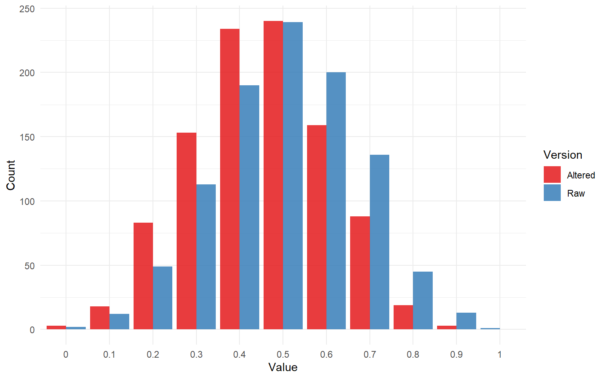

Lecture 5: Monte Carlo Simulation
Probability and Statistics

Monte Carlo simulation is a method of generating random data using the rules of probability
- Powerful tool for helping to understand the interplay between probability and statistics
- Many methodological developments rely purely on simulation!
- We will use simulation to
- Boost our intuitions about statistical methods
- Develop our computational chops
What Is Randomness?
Is the outcome of a coin flip random? Yes! At least at the limit of human knowledge and perception
Is the number of hours in a day random? Not really. It’s possible some cosmic event will change this, but we treat a day as a cycle of the earth around the sun that takes 24 hours
Is the amount time it takes for you to get from your home to campus random? Sure is! It probably takes you roughly the same amount of time every day, but varies due to unpredictable conditions like traffic, weather, your mood, etc.
Random \(\neq\) Arbitrary
Anything that isn’t perfectly predictable is subject to randomness, even things with some regularity. Statistics is all about separating the regularity from the randomness as best we can.
Psychology and Randomness
Imagine I flip three different coins 10 times.
Which, if any, of the following sequences seems the most/least “random” to you:
H T H H T H T T T H
H T H T H T H T H T
H H H H H T T T T T
These sequences are each equally (un)likely.
Random Variable
A random variable is any variable defined by
- A domain: possible values it can take on
- A function: A way of mapping possible values onto numerical outcomes
- A probability distribution: rules governing how likely each numerical outcome is
For example, consider a coin flip:
- Domain: {heads, tails}
- Function:: \(X(\text{coin flip}) = \text{heads} = 1; \text{tails} = 0\)
- Probability distribution: \(P(X = 1) = \pi = .5\)
Computational Randomness
Computers can generate sequences of pseudo random numbers, which we can use to represent random variables
For example, I can generate numbers from a Bernoulli distribution with \(\pi = .5\) to represent my coin flips.
Random number generating functions in R typically start with r and then the name of the probability distribution. In this case, I’m actually going to use the rbinom() function. Why not rbernoulli()?
The Bernoulli distribution is a special case of the binomial where there is only one trial
Simulating Single Bernoullis
rbinom()
In the rbinom() function I have three arguments
nis the number of “draws”sizeis the number of trials per drawprobis the probability of success on each trial
By increasing n I can sample a sequence of zeros and ones, and map those onto heads or tails, per my random variable function
The ifelse() function takes a vector and checks if a test condition is met. If it is, it returns the output specified as yes, otherwise it specifies the output returned as no.
Pseudo Randomness
- Computers are not capable of generating truly random sequences of numbers
- However, the sequence before a repetition can be so large that it becomes functionally random
- The random number generator in
Rwill repeat after \(2^{19937} - 1\) numbers- More than the number of seconds in the history of the universe!
Before drawing a sequence of random numbers, we can set.seed()
- Determines where in the (extremely long) sequence the random number generation will start
- Makes it so the same sequence can be drawn again to make code precisely reproducible
Monte Carlo Simulation
- Originally proposed in the 1940s by Stanislaw Ulam, John von Neumann, and Nicholas Metropolis
- Named for Monte Carlo Casino in Monaco
Procedure:
- Define domain
- Define probability distribution
- Draw random numbers
- Perform computation on random numbers
- Repeat many times
- Analyze distribution of computation outputs from each iteration
Loops
There are different techniques for simulating data. One that is common across many programming languages is to use “loops”
- Example: a
forloop - Repeats a procedure a finite number of times
- each iteration is indexed
- Indexed outputs can thus be saved and analyzed after loop is complete
Example
I am going to
- Simulate 10 coin flips (1 = heads, 0 = tails)
- Change the outcomes so the fifth result is always tails
- Calculate the proportion of remaining cases that are heads
- Repeat 1000 times
- Plot the distribution of proportions of remaining heads
Deleting Odd Heads
Let’s first look at how this simulation would look if I just did it once
In this sequence, the fifth outcome was heads, so I will change it to tails
Note that the proportion dropped because I “lost” one heads.
Another Case
In this one, the fifth outcome was not heads, so changing it does nothing
Monte Carloing
Now let’s do this 1000 times, and each time, save the proportion of heads that resulted.
To do this, I’ll start by creating an empty vector, then initialize my for loop. The for loop uses an index variable, which I am naming i, to index iterations. I will save my result into the ith entry of my empty vector
I’m going to use a variable i to index each iteration
Results
I can check descriptive statistics for my results
Unsurprisingly, the mean before altering our data is approximately 0.50, and is smaller in the cases where we did change our result.
Results Visualized

Other Functions
We will make use of Monte Carlo throughout the semester, often using the normal distribution functions, such as
rnorm(n, mean, sd)
These functions also have associated p (probability), q (quantile), and d (density) functions that are all part of the same families that we will make use of throughout the semester